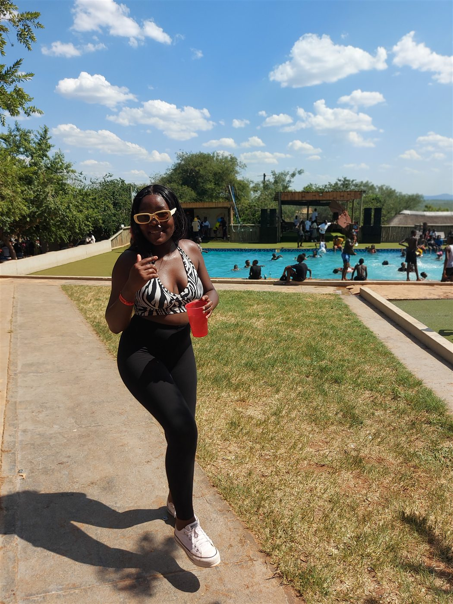
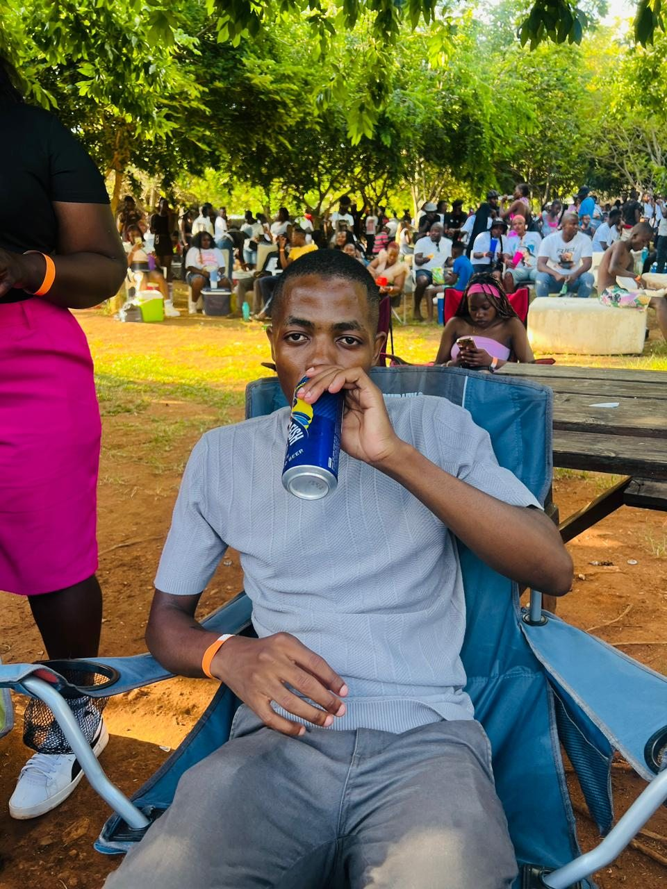

The pool is open every day. Arrive, pay the entrance fee and make the day yours. Popular occasion days such as 16 December can get very busy.
- Open daily for swimming
- Entrance fee applies
- Occasion days can be packed
One destination. Four very good reasons to leave the house.
GET YOUR DINALEDI PASS ↓The pool is open every day. Arrive, pay the entrance fee and make the day yours. Popular occasion days such as 16 December can get very busy.

Vows, music, photographs and space for everyone who came for you.

Accommodation is available by enquiry. Confirm room options, rates and dates directly with the resort before planning your stay.
Future posters and announcements will be published here.
Three complete ways to experience Dinaledi. Compare each route, choose yours and make the call.

A wedding website must answer more than “does it look nice?” Dinaledi gives the celebration one destination where people can gather, move from day into evening and enquire about staying over.
START WITH YOUR EVENT IDEA ↓Bring the ceremony, celebration and time together into one venue conversation.
Plan the atmosphere from arrival photographs to the last song.
Ask about accommodation for the people who should not have to rush away.
.jpg)
Select what you are planning. This creates an enquiry you can discuss directly with the venue.
Availability and accommodation options must be confirmed directly with Dinaledi.
CALL TO CHECK YOUR DATES →Dinaledi sits along the R81 in Makgakgapatse Village. The road view helps first-time visitors recognise the entrance before the pool and celebration spaces open up inside.
MAKGAKGAPATSE VILLAGE

Based on 32 Google reviews
Pool days · weddings · accommodation · events
Makgakgapatse Village, Giyani, 0826
Yes. The resort is open daily for swimming and an entrance fee applies. Occasion days such as 16 December are usually much busier.
Contact the venue about pool visits, weddings, private celebrations, group events and accommodation.
Call 076 999 1323 for current pricing, dates and the accommodation options available.
Official posters can be published in the What’s On passport section and shared through @dinaledi54 on TikTok.
Makgakgapatse Village on the R81 in Giyani, Limpopo, 0826.
THE PLACE LOOKS BETTER
WITH YOU IN IT.